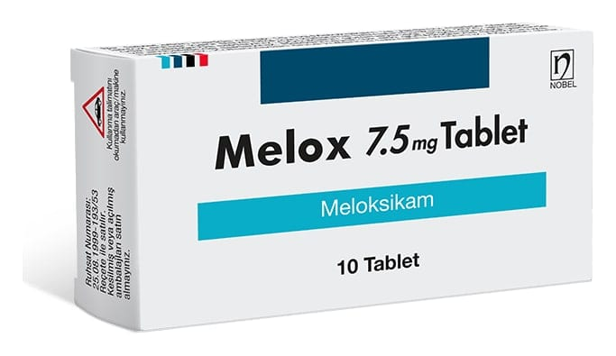

Melox 7,5 mg Tablet, 30 Adet

Ne için kullanılır
KT · Bölüm 1MELOX, her bir tablette etkin madde olarak 7.5 mg meloksikam içeren açık sarı renkli, bir yüzü tek çentikli, yuvarlak tabletlerdir. Çentiğin amacı tabletlerin kolay kırılarak, eşit dozlara bölünmesini sağlamaktır. 10 ve 30 adet tablet içeren blister ambalajlarda kullanıma sunulmuştur.
Meloksikam, eklem ve kaslardaki iltihap ve ağrıyı azaltmak için kullanılan steroid içermeyen iltihap giderici ilaçlar (non-steroidal antiinflamatuvar ilaçlar - NSAİİ) grubuna dahildir.
MELOX, Kireçlenme (osteoartrit), eklemlerde ağrı ve şekil bozukluğuna yol açan süreğen bir hastalık olan romatoid artrit ve sırt eklemlerinde sertleşme ile seyreden ağrılı ilerleyici bir romatizmal hastalık olan ankilozan spondilitin belirti ve bulgularının tedavisinde, Eklemlerdeki ürik asit birikimine bağlı olarak özellikle ayak ve bacaklardaki eklemlerde ani ağrı nöbetleri şeklinde seyreden akut gut artriti, akut kas iskelet sistemi ağrıları, ameliyat sonrası ağrı ve ağrılı adet görme (dismenore) tedavisinde kullanılır.